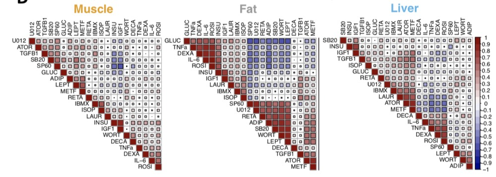
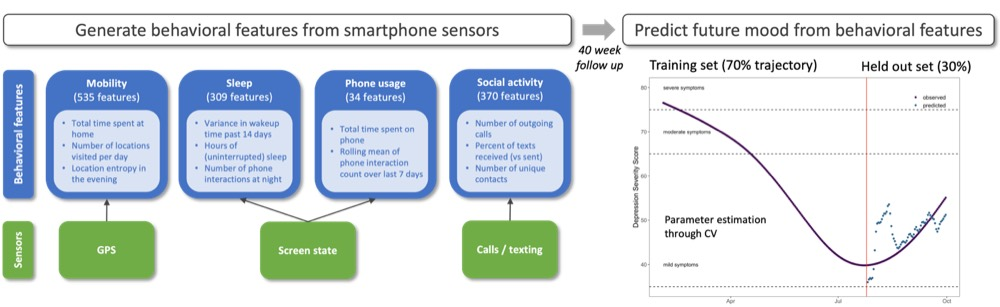
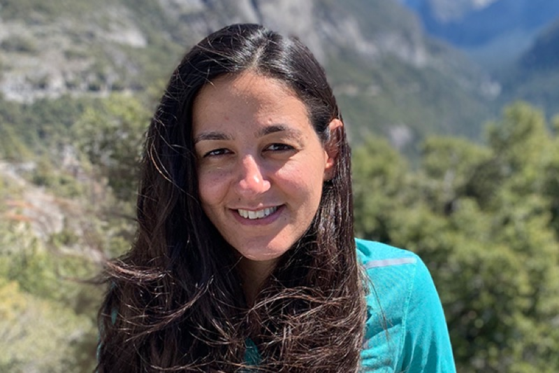
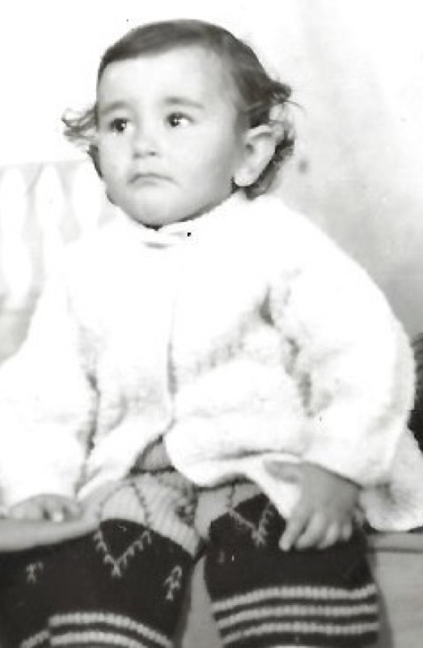
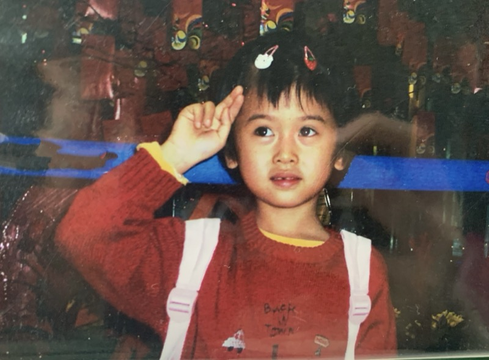
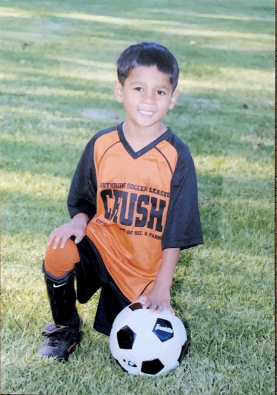

We are a computational research group (est. July 2022) in the Departments of Pathology, Computational Medicine, and Biostatistics at UCLA. We develop novel statistical methods and computational tools for analyzing high-dimensional repeated measures and intensive longitudinal data, such as those arising from high-throughput genomic assays, mobile phone and wearable sensors, and electronic health records.
We apply these methods to understand the genetic, molecular, cellular, and environmental mechanisms underlying complex human traits and diseases, with a focus on metabolic and psychiatric phenotypes.
News
🏆 Karen receives the UCLA Faculty Women's Club Endowed Scholarship.
📄 FastGxC published in Cell Genomics.
🏆 Amaan receives the Abdelmonem A. Afifi Departmental Student Fellowship in Biostatistics.
🏆 Karen receives the Dr. Ursula Mandel Scholarship, UCLA Division of Graduate Education.
🏆 Timothy awarded UCLA Graduate Research Mentorship Program funding for the second time.
📄 Adipose paper with the Pajukanta lab published in Nature Communications.
👋 Ronan joins the lab.
🎓 Faye is accepted into the Human Medical Genetics and Genomics PhD program at CU Anschutz.
👋 Charlie joins the lab.
👋 Amaan joins the lab.
🎤 Bruna attends the ASHG Annual Meeting.
🎤 Bruna attends the Apple Health Research Summit as an invited speaker.
📄 The Digital Mental Health Study protocol paper is published on medRxiv.
👋 Timothy joins the lab.
👋 Jenn joins the lab as our administrative assistant, here to save us all.
🎤 Lena presents at the IGVF Annual Meeting.
👋 Justin joins the lab.
👋 Lise joins the lab.
👋 Anthony joins the lab.
👋 Karen joins the lab.
🎤 Lena gives a platform presentation at ESHG.
📄 Personalized mood prediction from smartphones published in npj Digital Medicine.
🎤 Lena gives a platform presentation at ASHG.
🏆 Bruna receives the Bruins-in-Genomics Outstanding Mentorship Award.
👋 Lena officially joins the lab (n of 2!).
👋 Faye joins the lab.
👋 Stephanie joins the lab.
👋 Yuxuan joins the lab.
🎉 The Balliu Lab is established.
Research
Gene regulation is context dependent, changing across cell types, tissues, and conditions. We build fast, powerful methods to map local (cis) and distal (trans) context-dependent regulatory effects in both bulk and single-cell data.
Most disease-associated variants lie in noncoding DNA and act through gene regulation. We build methods that predict the genetically regulated part of gene expression, separating it into context-shared and context-specific components. Used in transcriptome-wide association studies, these predictors uncover more candidate genes for complex traits across tissues and cell types.
Human traits are shaped by both genes and environment, yet their interplay is poorly understood. We couple controlled cellular perturbations with population-scale RNA and ATAC sequencing and new gene by environment methods to find modifiable exposures that mediate genetic risk.

Personal devices give continuous, low-burden, objective measures of behavior and physiology. We turn passive smartphone and wearable data into validated, context-aware digital biomarkers linked to clinical outcomes and genetics, including personalized prediction of depressive mood.

Selected publications
Full list of publications · PubMed
Adipose single-cell epigenome and transcriptome localize genetic risk for cardiometabolic disease and accelerated aging
Lee SHT, Kar A, … Balliu B*, Pajukanta P*. Nature Communicationsco-last author
Comparing self-reported and physiological sleep quality from consumer devices to depression and neurocognitive performance
Akre S, Cohen ZD, … Balliu B, Craske MG, Bui AAT. npj Digital Medicine
Assessing the feasibility of large-scale digital sensing for depression and anxiety: the Digital Mental Health Study
Douglas CS, Congdon E, Huang C, Seok D, Cohen ZD, … Balliu B. medRxiv
Genetic regulation of gene expression and splicing during a 10-year period of human aging
Balliu B, Durrant M, de Goede O, … Ingelsson E, Montgomery SB. Genome Biologyfirst author
Software
Fast, powerful mapping of context-specific (cis) regulatory effects from bulk and single-cell data. Up to 9 times more powerful, reducing computation from years to minutes.
Multi-context transcriptome-wide association studies (TWAS), developed with collaborators as an extension of FastGxC.
News
🏆 Karen receives the UCLA Faculty Women's Club Endowed Scholarship.
📄 FastGxC published in Cell Genomics.
🏆 Amaan receives the Abdelmonem A. Afifi Departmental Student Fellowship in Biostatistics.
🏆 Karen receives the Dr. Ursula Mandel Scholarship, UCLA Division of Graduate Education.
🏆 Timothy awarded UCLA Graduate Research Mentorship Program funding for the second time.
📄 Adipose paper with the Pajukanta lab published in Nature Communications.
👋 Ronan joins the lab.
🎓 Faye is accepted into the Human Medical Genetics and Genomics PhD program at CU Anschutz.
👋 Charlie joins the lab.
👋 Amaan joins the lab.
🎤 Bruna attends the ASHG Annual Meeting.
🎤 Bruna attends the Apple Health Research Summit as an invited speaker.
📄 The Digital Mental Health Study protocol paper is published on medRxiv.
👋 Timothy joins the lab.
👋 Jenn joins the lab as our administrative assistant, here to save us all.
🎤 Lena presents at the IGVF Annual Meeting.
👋 Justin joins the lab.
👋 Lise joins the lab.
👋 Anthony joins the lab.
👋 Karen joins the lab.
🎤 Lena gives a platform presentation at ESHG.
📄 Personalized mood prediction from smartphones published in npj Digital Medicine.
🎤 Lena gives a platform presentation at ASHG.
🏆 Bruna receives the Bruins-in-Genomics Outstanding Mentorship Award.
👋 Lena officially joins the lab (n of 2!).
👋 Faye joins the lab.
👋 Stephanie joins the lab.
👋 Yuxuan joins the lab.
🎉 The Balliu Lab is established.
People


Brunilda Balliu is an Assistant Professor in the Departments of Pathology & Laboratory Medicine, Computational Medicine, Human Genetics, and Biostatistics at UCLA. She received a BSc in Statistics from the Athens University of Economics and Business (Greece) and a PhD in Statistical Genetics from Leiden University Medical Center (Netherlands), advised by Prof. Dr. Jeanine Houwing-Duistermaat and Stefan Boehringer. She completed postdoctoral research at Stanford University with Stephen Montgomery, focusing on methods to understand the role of inherited variation in molecular and complex traits. She joined UCLA in 2018 as an Independent Fellow in Computational Medicine and later as faculty. Outside work, she has been obsessed with salsa dancing since she saw these two dancing!
Lena Krockenberger is a PhD candidate in the Bioinformatics Interdepartmental Graduate Program at UCLA. Lena earned a BS in Biology with a specialization in Bioinformatics from UC San Diego in 2022. Lena joined the Balliu Lab in June 2023 and works in statistical genetics and computational genomics, developing methods to understand how genetic variation regulates gene expression across biological contexts. Lena is currently developing methods to detect trans-genetic regulatory effects and to uncover the molecular mechanisms linking genetic variation to complex disease. Outside the lab, Lena enjoys soccer, running, and trying new restaurants throughout Los Angeles.

Karen Li is a Biomathematics PhD student in the Department of Computational Medicine. She joined the Balliu Lab in June 2024. She received a BA in Mathematics and Statistics from the University of California, Santa Barbara (2022) and an MS in Biostatistics at Yale University (2024). She is broadly interested in developing statistical and computational methods in statistical genetics and genomics in bulk and single-cell data. Her current work focuses on developing a fine-mapping framework to identify candidate causal genes and contexts for complex human traits and diseases. Outside of research, she enjoys playing tennis, collecting and listening to vinyl records, and daydreaming about relaxing on a beach in the Maldives!
Timothy Shen is a Biostatistics PhD student. Timothy joined the Balliu Lab in October 2025.

Amaan Jogia-Sattar is a Biostatistics PhD student in the UCLA Fielding School of Public Health. Amaan received an MS in Biostatistics from UCLA in 2026 after a BA in Public Health with a minor in Data Science from UC Berkeley in 2024. Amaan joined the Balliu Lab in November 2025 and develops statistical and computational methods for high-dimensional molecular data in statistical genetics and functional genomics, currently focusing on statistical modeling of dynamic genetic regulation during cellular reprogramming using single-cell multiome data. Outside of research, Amaan enjoys tennis, exploring Los Angeles, and spending time with Louie, the family dog.
Ronan Bennett is a Bioinformatics PhD student. Ronan joined the Balliu Lab in March 2026.
Lise Tucker is a Computational and Systems Biology undergraduate. Lise joined the Balliu Lab in December 2024 and works on novel cis-eQTL mapping methods for single-cell RNA-seq data.
Justin Ng is a Statistics and Data Science undergraduate. Justin joined the Balliu Lab in March 2025 and works on novel cis-eQTL mapping methods for single-cell omics data.
Charlie Wang is a Statistics and Data Science undergraduate. Charlie joined the Balliu Lab in December 2025 and works on novel cis-eQTL mapping methods for single-cell omics data.
Jennifer Shedrack is the lab’s administrative assistant. Jenn joined in September 2025.
Feiyang Huang, Master student in Biostatistics. April 2023 to October 2025. Worked on statistical methods for leveraging digital behavioral phenotypes to predict mood disorders. Now a PhD student at CU Anschutz.
Stephanie Weber, Master student in Human Genetics and Genomic Data Analytics at Keck Graduate Institute. January 2023 to April 2024. Worked on methods for allele-specific expression analyses. Now Business Development Associate at Fulgent Genetics.
Yuxuan Xia, Undergraduate student in Computational and Systems Biology. January 2023 to April 2024. Worked on methods for QTL mapping in single-cell data. Now a DVM candidate at Cornell.
Anthony Zhao, Undergraduate student in Computer Science. October 2024 to January 2026. Worked on novel multiple-testing methods and methods for mapping regulatory effects in single-cell omics data.
Join us
We have an opening for quantitatively skilled PhDs to study the impact of genomic variation on the gene regulatory networks of reprogramming as part of the IGVF consortium (shared with the Zaitlen lab). If interested, email me with a short statement of research interests, your CV, and contact information for three references.
We take UCLA students from Bioinformatics, Biomathematics, Biostatistics, Genetics and Genomics, Neuroscience, and related programs. We mentor students with a strong quantitative foundation who want to develop new methods, as well as those from diverse backgrounds interested in analyzing large-scale datasets. If you would be a good fit, email me with your research interests and CV.
We are not accepting undergraduates this quarter. If you think you might be a good fit in the future, email me with your research interests and CV.
Contact
Assistant Professor. Departments of Pathology & Laboratory Medicine, Computational Medicine, Human Genetics, and Biostatistics, UCLA.
Balliu Lab
Department of Computational Medicine
Center for Health Sciences (CHS), UCLA Fielding School of Public Health
10833 Le Conte Avenue
10th Floor, Room CHS 107-100
Los Angeles, CA 90095
Interested in joining the lab? See the Join page.